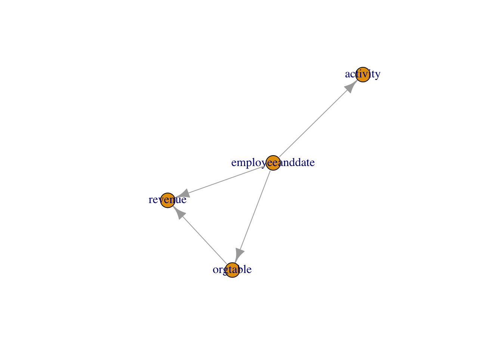
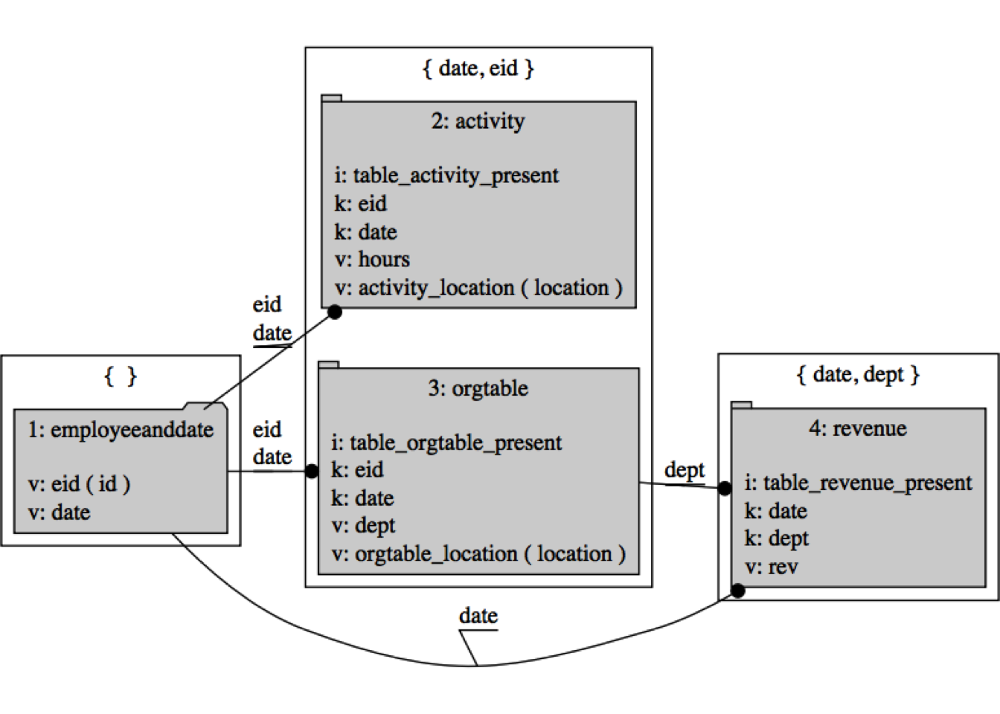

Let’s again discuss the task of left joining many tables from a data warehouse using R and a system called “a join controller” (last discussed here).
One of the great advantages to specifying complicated sequences of operations in data (rather than in code) is: it is often easier to transform and extend data. Explicit rich data beats vague convention and complicated code.
For example suppose we have a dplyr RSQLite database handle in the variable my_db and we are using the following names for our tables in this database (keep in mind replyr allows different abstract and concrete table names, for this example we will assume they are the same):
tableNames <- c('employeeanddate',
'revenue',
'activity',
'orgtable')We can now use replyr::tableDescription() to get descriptions of these tables including any declared primary key structure.
suppressPackageStartupMessages(library("dplyr"))
library("replyr")## Loading required package: seplyr## Loading required package: wrapr## Loading required package: cdatatDesc <- tableNames %>%
lapply(
function(ni) {
replyr::tableDescription(ni,
dplyr::tbl(my_db, ni),
keyInspector= key_inspector_sqlite)
}) %>%
bind_rows()
print(tDesc[, c('tableName', 'handle', 'keys', 'columns'), ])## # A tibble: 4 x 4
## tableName handle keys columns
## <chr> <list> <list> <list>
## 1 employeeanddate <S3: tbl_dbi> <chr [0]> <chr [2]>
## 2 revenue <S3: tbl_dbi> <chr [2]> <chr [3]>
## 3 activity <S3: tbl_dbi> <chr [2]> <chr [4]>
## 4 orgtable <S3: tbl_dbi> <chr [2]> <chr [4]>This is more legible if we turn it into a column join plan.
columnJoinPlan <- buildJoinPlan(tDesc, check= FALSE)
print(columnJoinPlan[, c('tableName', 'sourceColumn', 'resultColumn', 'isKey')])## # A tibble: 13 x 4
## tableName sourceColumn resultColumn isKey
## <chr> <chr> <chr> <lgl>
## 1 employeeanddate id id FALSE
## 2 employeeanddate date date FALSE
## 3 revenue date date TRUE
## 4 revenue dept dept TRUE
## 5 revenue rev rev FALSE
## 6 activity eid eid TRUE
## 7 activity date date TRUE
## 8 activity hours hours FALSE
## 9 activity location activity_location FALSE
## 10 orgtable eid eid TRUE
## 11 orgtable date date TRUE
## 12 orgtable dept dept FALSE
## 13 orgtable location orgtable_location FALSEAt this point we are almost ready to execute a left join plan on these four tables (as detailed in vignette('joinController', package= 'replyr')). What we need to do is:
id column in the employeeanddate table is an “employee id” and mean to match the eid columns in other tables.employeeanddate which we assume the analyst created through a join or cross-product of an employee list and set of dates. The left most table represents the experimental design or the exact set of row if the other tables are uniquely keyed (which can be confirmed with replyr:keysAreUnique()). The left join outcome depends on rows and values in the left most table, and not on its declared key structure (that is why we do not care that the employeeanddate has no declared keys, which is common for derived tables).First let’s patch up the key structure. This could be done by exporting the columnJoinPlan as a spreadsheet and editing it, but for our example we will just alter it in place.
columnJoinPlan$resultColumn[columnJoinPlan$sourceColumn=='id'] <- 'eid'
print(columnJoinPlan[, c('tableName', 'sourceColumn', 'resultColumn', 'isKey')])## # A tibble: 13 x 4
## tableName sourceColumn resultColumn isKey
## <chr> <chr> <chr> <lgl>
## 1 employeeanddate id eid FALSE
## 2 employeeanddate date date FALSE
## 3 revenue date date TRUE
## 4 revenue dept dept TRUE
## 5 revenue rev rev FALSE
## 6 activity eid eid TRUE
## 7 activity date date TRUE
## 8 activity hours hours FALSE
## 9 activity location activity_location FALSE
## 10 orgtable eid eid TRUE
## 11 orgtable date date TRUE
## 12 orgtable dept dept FALSE
## 13 orgtable location orgtable_location FALSENow we can worry about left join order.
The most important choice in a left join plan is which table is left-most. If all the other tables are addressed by primary keys (i.e., there is not more than one row matching any row of the left-table) then the left-most table completely determines the set of rows in the left join result, no matter how many tables we are joining in. The order the rest of the tables are joined becomes irrelevant assuming it is an order we can execute.
What prevents a proposed left join order from being executable is trying to join in a table that has a key that we do not yet have values for. Let’s show this as part of our example. Suppose we know that we want the table “employeeanddate” to be the left-most table in our left join sequence (and again, this is the one important choice). We can see our current left join plan (columnJoinPlan) is not executable in the order it is currently specifying:
print(paste("issues:", inspectDescrAndJoinPlan(tDesc, columnJoinPlan)))## [1] "issues: key col(s) ( dept ) not contained in result cols of previous table(s) for table: revenue"This message is saying: when it comes time to join in the “revenue” table rows do not yet have values for the “dept” key column (so we can’t do the join in that order).
The table to table conditions are well-defined if a few invariants and conventions are maintained in the tDesc table descriptions:
resultColumn name can occur at most once with isKey==FALSE.resultColumn names with isKey==TRUE have the same interpretation in all tables (due to the ability to re-map names from sourceColumn).Since not all orders are valid left join plans the task is to find a re-ordering (if there is one) that is a valid left join plan. The requirement that each table’s keys have known values before we join gives us order relations on the tables (we know which tables must be joined before others). Finding an ordering that obeys all the relations is called “topological sorting” We can compute the join path dependencies and re-order the join plan to be realizable as follows (assuming the igraph package is available do perform the topological sorting and plot the directed relations).
sorted <- NULL
# requireNamespace checks just for strict warning hygiene in vignette
if(requireNamespace('igraph', quietly = TRUE)) {
sorted <- topoSortTables(columnJoinPlan, 'employeeanddate')
plot(sorted$dependencyGraph)
print(sorted$tableOrder)
}
## [1] "employeeanddate" "activity" "orgtable" "revenue"In the above graph a table can only be joined after all of the tables pointing to it have been joined. See that this captures that the “revenue” table must be joined after the “orgtable” (as “orgtable” is our mapping from employees to departments). We could work on the legibility of the above graph using igraph controls, but I feel that it is just as well to move on to the detailed DiagrammeR based left join diagrams.
And (again assuming we have the igraph package), we have a new sorted$columnJoinPlan that passes checks:
if(!is.null(sorted)) {
print(paste("issues:", inspectDescrAndJoinPlan(tDesc,
sorted$columnJoinPlan)))
}## [1] "issues: "The new sorted$columnJoinPlan can be re-plotted (needs the suggested packages: DiagrammeR, htmlwidgets, webshot, and magick):
# requireNamespace checks just for strict warning hygiene in vignette
if(!is.null(sorted)) {
have <- c(
requireNamespace('DiagrammeR', quietly = TRUE),
requireNamespace('htmlwidgets', quietly = TRUE),
requireNamespace('webshot', quietly = TRUE),
requireNamespace('magick', quietly = TRUE),
requireNamespace('grid', quietly = TRUE)
)
if(all(have)) {
tryCatch(
{
png <- sorted$columnJoinPlan %>%
makeJoinDiagramSpec() %>%
renderJoinDiagram()
if(!is.null(png)) {
grid::grid.raster(png)
}
},
error = function(e) { warning(e); NULL}
)
}
}
And the new sorted$columnJoinPlan is ready to be executed:
if(!is.null(sorted)) {
print("join plan execution log")
res <- executeLeftJoinPlan(tDesc,
sorted$columnJoinPlan,
verbose = TRUE)
print("join results")
dplyr::glimpse(res)
}## [1] "join plan execution log"
## [1] "start employeeanddate Sat Oct 21 16:50:23 2017"
## [1] " rename/restrict employeeanddate"
## [1] " 'eid' = 'id'"
## [1] " 'date' = 'date'"
## [1] " res <- employeeanddate"
## [1] "done employeeanddate Sat Oct 21 16:50:23 2017"
## [1] "start activity Sat Oct 21 16:50:23 2017"
## [1] " rename/restrict activity"
## [1] " 'table_activity_present' = 'table_activity_present'"
## [1] " 'eid' = 'eid'"
## [1] " 'date' = 'date'"
## [1] " 'hours' = 'hours'"
## [1] " 'activity_location' = 'location'"
## [1] " res <- left_join(res, activity,"
## [1] " by = c( 'eid', 'date' ))"
## [1] "done activity Sat Oct 21 16:50:23 2017"
## [1] "start orgtable Sat Oct 21 16:50:23 2017"
## [1] " rename/restrict orgtable"
## [1] " 'table_orgtable_present' = 'table_orgtable_present'"
## [1] " 'eid' = 'eid'"
## [1] " 'date' = 'date'"
## [1] " 'dept' = 'dept'"
## [1] " 'orgtable_location' = 'location'"
## [1] " res <- left_join(res, orgtable,"
## [1] " by = c( 'eid', 'date' ))"
## [1] "done orgtable Sat Oct 21 16:50:23 2017"
## [1] "start revenue Sat Oct 21 16:50:23 2017"
## [1] " rename/restrict revenue"
## [1] " 'table_revenue_present' = 'table_revenue_present'"
## [1] " 'date' = 'date'"
## [1] " 'dept' = 'dept'"
## [1] " 'rev' = 'rev'"
## [1] " res <- left_join(res, revenue,"
## [1] " by = c( 'date', 'dept' ))"
## [1] "done revenue Sat Oct 21 16:50:23 2017"
## [1] "join results"
## Observations: 2
## Variables: 10
## $ eid <chr> "i4", "i4"
## $ date <int> 20140501, 20140601
## $ table_activity_present <dbl> 1, 1
## $ hours <int> 50, 3
## $ activity_location <chr> "office", "client"
## $ table_orgtable_present <dbl> 1, 1
## $ dept <chr> "IT", "SL"
## $ orgtable_location <chr> "CA", "TX"
## $ table_revenue_present <dbl> 0, 1
## $ rev <int> NA, 2000And this is how we use tools to do the heavy lifting in building a left join plan:
replyr::tableDescription().replyr::buildJoinPlan().columnJoinPlan and refine the definition of table keys using an editor or spreadsheet software. This is key documentation that should be shared with other groups and kept under source-control.replyr::topoSortTables() can then reorder columnJoinPlan to bring the tables together in a realizable order.replyr::makeJoinDiagramSpec() %>% replyr::renderJoinDiagram() can then produce and capture a detailed diagram of the final join plan.replyr::executeLeftJoinPlan() can execute the join plan with diagnostics.for(ni in tableNames) {
replyr_drop_table_name(my_db, ni)
}
rm(list=ls())
gc(verbose = FALSE)## used (Mb) gc trigger (Mb) max used (Mb)
## Ncells 982172 52.5 1770749 94.6 1770749 94.6
## Vcells 1514105 11.6 4138287 31.6 3381906 25.9